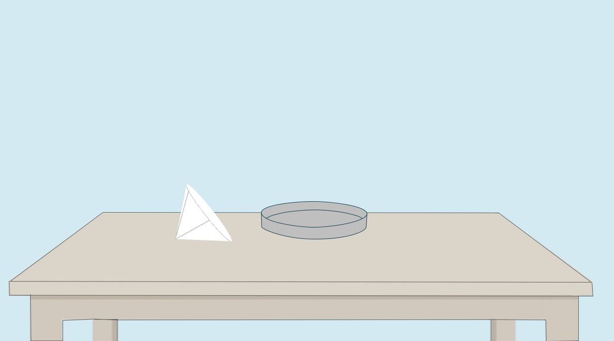

Determination of Iron Oxide (Fe₂O₃) and Aluminium Oxide (Al₂O₃)
Step 6c: Transfer to Crucible
About this step:
In this step, The wet Al(OH)₃ residue is transferred carefully to a crucible for drying 0and ignition.
Click on filter paper to transfer.


👇